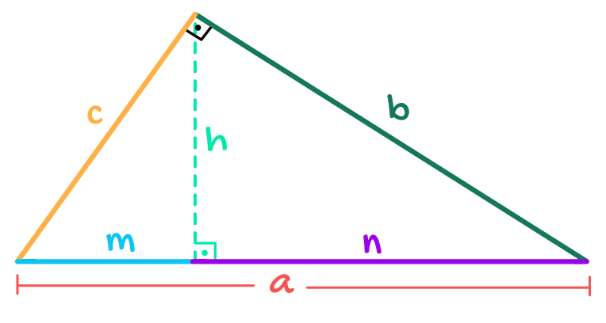

Dado a imagem acima podemos abservar três triangulos, um maior e dentro dele dois menores sendom um médio e outro menorzinho.
Sabemos que que todos eles são retangulos assim todos tem um angulo de \(90°\), como os menores estão detro do maior tomados dois
a dois eles tem mais um ângulo em comum, logo eles são semelhantes entre si.
Agora só usarmos semelhança dos lados correspondente
analisando os triângulos menores temos
triangulo maior \(a\) hipotenusa, \(b\) cateto maior e \(c\) cateto menor
triangulo médio \(b\) hipotenusa, \(n\) cateto maior e \(h\) cateto menor
triangulo menor \(c\) hipotenusa, \(h\) cateto maior e \(m\) cateto menor
pelo triângulo maior e médio temos
$$\frac{a}{b} = \frac{b}{n}$$ logo $$b^2 = an $$
pelo triangulo maior e o menorzinho temos
$$\frac{a}{c} = \frac{c}{m}$$ logo $$c^2 = am $$
somandos a duas equações temos a seguinte
$$b^2 + c^2 =an + am $$ colocando \(a\) em evidência temos
$$b^2 + c^2 =a(n + m) $$ mas observando a imagem repare que \(a = m + n\) logo
$$b^2 + c^2 =a(a) $$ assim
$$b^2 + c^2 =a^2$$ ou melhor
$$a^2 = b^2 + c^2$$ como diz o teorema de Pitágoras